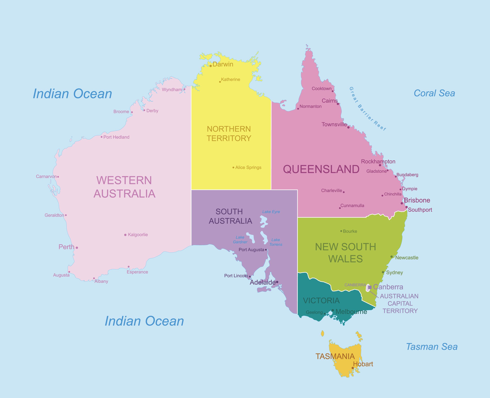

Earth’s Great Landmasses
ASIA
- Geographical Extremes: Asia is home to the highest peak on Earth, Mount Everest (8,848 meters), and the lowest exposed land point, the Dead Sea (-430 meters). It also includes vast deserts like the Gobi Desert and large rainforests such as Borneo.
- Economic and Technological Landmarks: It hosts the world's tallest building the Burj Khalifa in Dubai (828 meters) and Tokyo holds more millionaires than cities like Paris or Los Angeles.
- Unique Traditions and Crafts: Asia preserves distinct practices such as the Indonesian Batik fabric dyeing, Japanese Kintsugi pottery repair, and a rich diversity of languages and scripts including Chinese characters and Arabic script
AFRICA
- Cultural and Political Diversity: Africa comprises 54 recognized countries with rich cultural heritage, languages, traditions, and histories. It is the birthplace of humankind, with important archaeological sites showing early human evolution
- Natural Wonders: The continent hosts unique ecosystems, from savannas to rainforests, and remarkable wildlife including lions, elephants, giraffes, rhinoceroses, and gorillas. Geopolitical Importance: Africa is connected to Eurasia by the Isthmus of Suez and is strategically important due to its location bridging two continents and multiple oceans
- Second Largest Continent: Africa is the second-largest continent by both area (around 30.3 million sq km or 11.7 million square miles) and population, covering about 20% of Earth's total land area.
AUSTRALIA

- Australia is both a country and a continent, uniquely occupying an entire continent without any land borders with another nation. It is the sixth-largest country by area, covering about 7.7 million square kilometers (2.99 million square miles)
- Geographically diverse, Australia features vast coastal lowlands, extensive deserts, and sizable mountain ranges. The continent can be divided into three main physiographic regions: the Eastern Highlands (including the Great Dividing Range), the Central Lowlands, and the Western Plateau
- The continent has a stable geological history due to its position on the Australian tectonic plate. Mainland Australia lacks active volcanism but hosts some of the oldest known rocks on Earth, over 3 billion years old. However, two active volcanoes exist on nearby Heard Island in Australian territory
EUROPE
- Geographical Boundaries: Europe is bordered by the Arctic Ocean to the north, the Atlantic Ocean to the west, the Mediterranean Sea to the south, and Asia to the east. The boundary with Asia is commonly defined by the Ural Mountains, Ural River, Caspian Sea, Greater Caucasus, Black Sea, and Turkish Straits
- Cultural and Historical Significance: Europe is the origin of Western civilization and numerous countries with rich historical heritages, ranging from ancient Greece and the Roman Empire to the Renaissance and modern institutions like the European Union.
- Political Division: Europe consists of about 50 sovereign states, with Russia being the largest country by land area and population .
ANTARCTICA

- Antarctica is Earth's southernmost and one of its most remarkable continents, noted for several extremes and unique features:
- Geography and Elevation: The continent is surrounded by the Southern Ocean and is divided into East and West Antarctica by the Transantarctic Mountains. Its average elevation (around 2,160 meters) is higher than any other continent, mostly due to its thick ice cover. The highest point is Vinson Massif at 4,892 meters
- Unique Features:The Onyx River is Antarctica's longest, and Lake Vostok is the largest subglacial lake, lying beneath several kilometers of ice. Mount Erebus is the world’s southernmost active volcano, and Dome Argus (Dome A) is the highest ice feature
NORTH AMERICA
- Geographical Extent: It stretches from about 7°N latitude near Panama to about 85°N latitude in the far north, just 500 kilometers from the North Pole. Longitude-wise, it extends roughly from 20°W near Greenland to 179°W near the Aleutian Islands, almost reaching the International Date Line
- Countries: The continent includes three large countries—Canada, the United States, and Mexico—as well as the seven smaller Central American countries and numerous islands in the Caribbean
- Cultural and Human Geography: The continent has a diverse population of more than 590 million people distributed across 23 independent states. Its cultures are shaped by Indigenous peoples, European colonization, African heritage, and immigration from Asia and elsewhere
SOUTH AMERICA
- Geography and Position: South America is almost entirely in the Western Hemisphere and mostly in the Southern Hemisphere. Its distinctive, roughly triangular shape is broadest in the north and tapers to a point at Cape Horn, Chile
- Population: The continent is home to more than 434 million people, ranking fifth in population globally. Brazil is the largest country both by area and population, holding nearly half of South America’s people and producing half its GDP
- Countries and Territories: South America consists of 12 sovereign states (including Argentina, Bolivia, Brazil, Chile, Colombia, Ecuador, Guyana, Paraguay, Peru, Suriname, Uruguay, and Venezuela), as well as overseas territories like the Falkland Islands (UK) and French Guiana (France)
click here:to move up